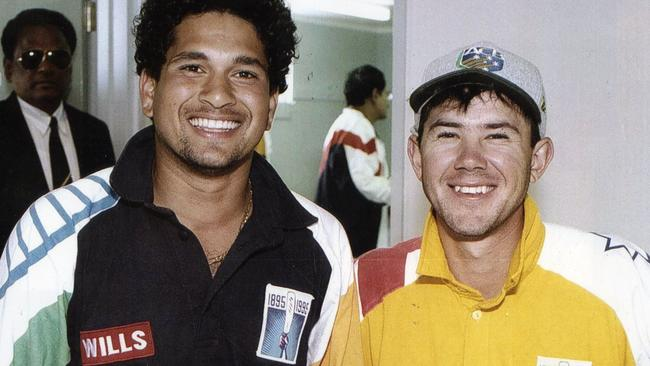

In-depth Sales Analysis study, in which I analysed a wide range of an e-commerce
sales data to discover useful insights.
This project provides a comprehensive perspective of revenue trends and
consumer behavior, from identifying the most successful month to comprehending regional sales dynamics.


Below are three dynamic projects that showcase my data visualization skills and insights. Explore King County's real estate trends, dive into the world of coffee sales, and discover key insights about the vibrant city of Seattle. Click below to see valuable data-driven stories.

The Nashville Real Estate Insights project is a comprehensive data cleaning project aimed at providing a polished dataset for in-depth analysis of the Nashville real estate market. Through various cleaning, standardization, and extraction techniques, I've created a reliable resource for gaining valuable insights into property trends, sales dynamics, and much more. Make data-driven decisions confidently with the refined dataset.
This SQL-based project delves into Covid-19 data, employing various techniques such as Joins, CTEs, Temp Tables, Windows Functions, and more. It provides insights on infection rates, mortality rates, vaccination progress, and population impact across different continents and India. The project aims to offer a comprehensive understanding of the pandemic's impact on a global scale.

Explore cricket player performance of S.Tendulkar and R.Ponting using R, analyzing runs, centuries, and half-centuries. Gain insights into home vs. away matches, performance against major teams, and trends over a decade. A valuable resource for cricket enthusiasts and analysts.